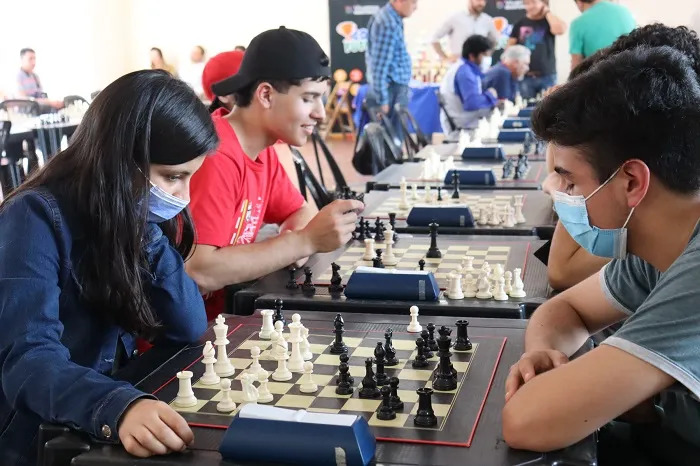

PRESENTACIÓN
Bienvenidos a mi tablero personal
Este blog es mi rincón digital donde comparto una de mis mayores pasiones: el ajedrez. Aquí podrás conocer más sobre cómo este juego ha influido en mi forma de pensar, tomar decisiones y disfrutar mi tiempo libre. Más que un simple pasatiempo, el ajedrez es para mí una forma de vida que me reta constantemente y me enseña a ver el mundo desde múltiples perspectivas.
Más que movimientos, experiencias
No solo relato partidas o estrategias, sino que comparto experiencias reales que han surgido gracias al ajedrez: torneos locales, análisis de aperturas, retos personales frente al tablero y hasta reflexiones sobre cómo el juego se conecta con la vida misma. Cada entrada está pensada para inspirar a quienes ya aman este deporte mental o para despertar la curiosidad en nuevos jugadores.
Jaque a la rutina
Este blog no busca ser una guía infalible, sino una bitácora honesta de lo que significa aprender, disfrutar y crecer con el ajedrez. Si estás buscando un espacio donde compartir tu pasión, mejorar tu juego o simplemente disfrutar de historias que giran alrededor del tablero, este es tu lugar.